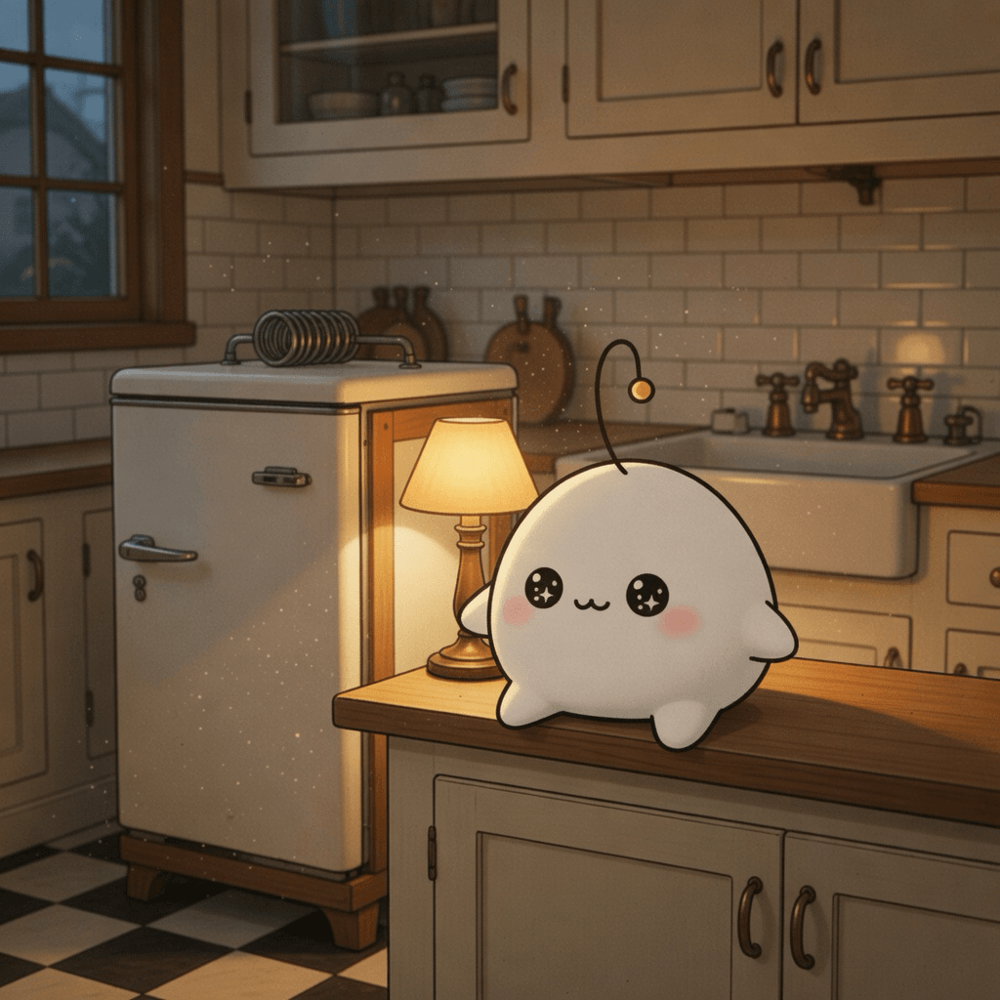

August 29, 2026
August 29, 2026

Inspiration
Bug Blindness
The longer we live with a system, the less we see its flaws — expertise quietly builds its own blind spots, and the familiar becomes invisible.
Benjamin Franklin's Alter Egos Gave Him the Most Freedom
Speaking through another name let Franklin say what he could not as himself — a change of frame is a kind of liberty.
The Einstein-Szilard Refrigerator
A brilliant machine with no moving parts — the deepest elegance is what works silently, without noise, until you stop to look.